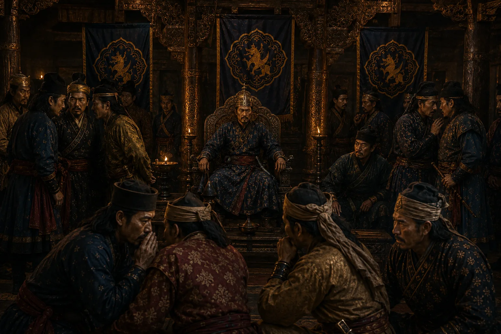

Rise of Debera Borbarua's Palace Reign of Terror
1672–1675 · Six kings in nine years

Debera Borbarua accumulates absolute despotic control, executing rival ministers, princes, and courtiers with impunity.
Sources have not yet been catalogued for this record.
People: Debera Borbarua, Ramdhwaj Singha (Suklamphaa)
Open this scene in the interactive archive · Follow this event on MAP